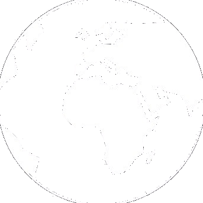
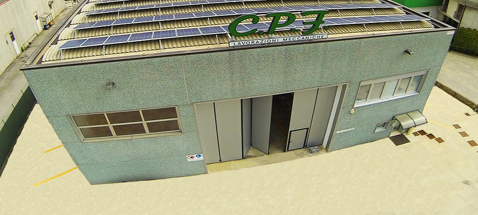
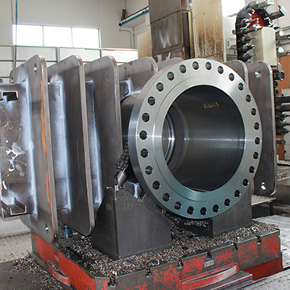

Men at work... for real!
IT
Since its creation in 1975, C.P.F. he has always worked with one well-designed concept: "he works every piece according to a humiliated standard". The principle has proved so convincing that over thirty years later there is little doubt that the Company is the pre-eminent in the field of body processing. Todat C.P.F. uses his experience to create added value and premium quality for his customers. Its highly automated machine tools and the technological know-how of its technicians allow C.P.F. to meet all the processing needs related to valve bodies, of any type. C.P.F. it has a high level machinery fleet, coming from a careful and targeted investment policy, to keep the Company constantly updated
 CPF Meccanica was founded in 1978 and has specialized mainly in the production of high precision mechanical transmission parts which are used in various industrial sectors. Born as an artisan reality, today it is an ISO and UNI EN ISO certified company, technologically advanced and structured with state-of-the-art production plants that are constantly updated. Internally it employs highly qualified human resources to offer personalized answers to the most complex needs of customers. The production flexibility and the company automation allow today the realization of products at highly competitive prices all over the world, both in standard features and in more elaborate customizations.
 C.P.F. | Lavorazioni Meccaniche, following the main company principles and the highest international standards, is achieving some very important objectives: the replacement and innovation of all the equipment, 100% of highly qualified operators and customer satisfaction. Our last goal? Zero non-compliance of all our productions and productions. C.P.F. uses his experience to create added value and premium quality for his customers. Its highly automated machine tools and the technological know-how of its technicians allow C.P.F. to meet all the processing needs related to valve bodies, of any type. C.P.F. it has a high level fleet of machinery, coming from a careful and targeted investment policy, to keep the Company constantly updated. You can enter our company simply by using the contact form below, by email or simply with a phone call.